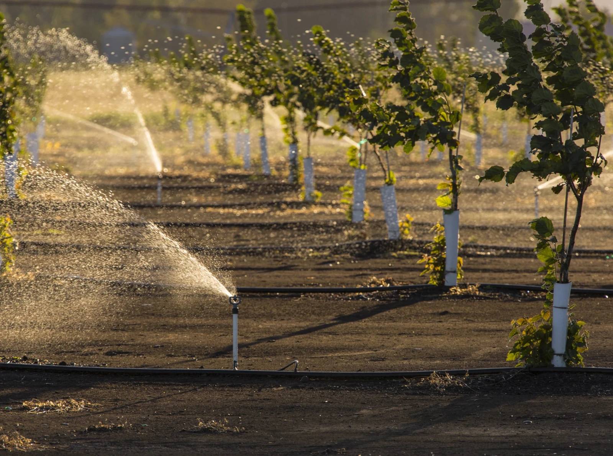
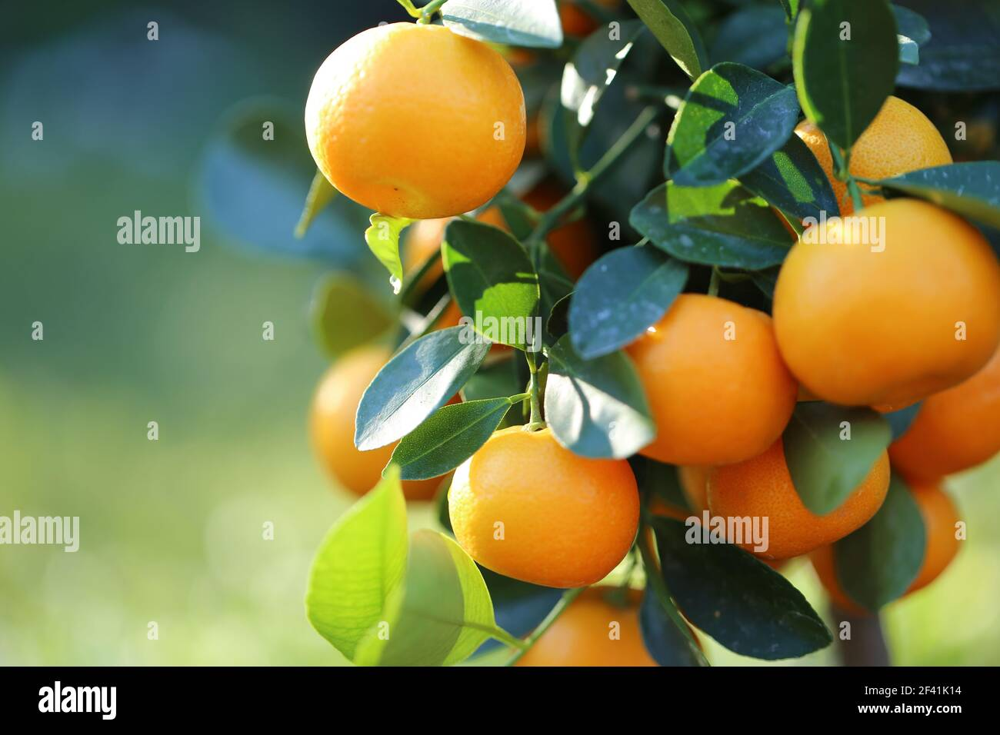

张顺发，您好
白舍镇 · 4号地块
9月10日
星期二
今日果园摘要
基于地块植株数据的综合评估
86
生长评分
长势良好
植株生长正常
请继续保持当前管理
土壤水分
24.6
%
适宜范围 20%~30%
病虫害风险
低
暂无异常
近7日降雨
18.5
mm
较上周 +6.2mm
今日待办
查看全部 ›
常用服务
全部服务 ›
病虫害识别
生长评价
价格指数
环境监测
病虫害库
病虫害上报
农事上报
农技资讯
今日动态
详情 ›
今日价格
¥1.45
/斤
较昨日 +0.03
今日天气
28
°C
多云 · 东南风3级
近7日长势
整体走势向好
农技资讯
查看全部 ›

初秋蜜桔灌溉与水分管理技巧
技术

果实膨大期叶面肥施用指南
技术
任务标题
待执行
任务描述
任务描述内容
推荐时段：07:00-09:00
适用区域：全部地块
来源：AI农事助手
操作建议
详细操作建议内容
执行
采纳
关闭
首页
监测
病虫害
我的